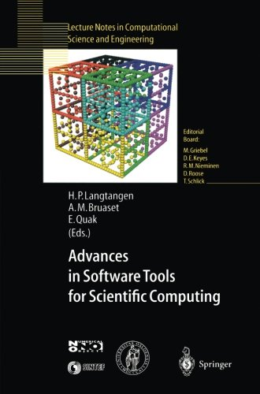
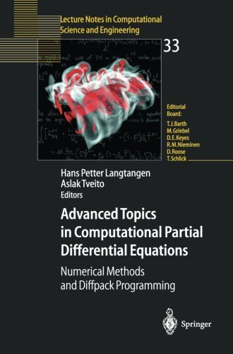
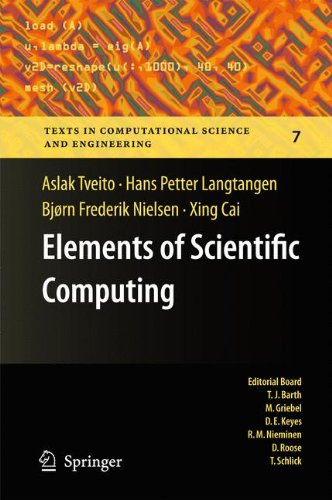
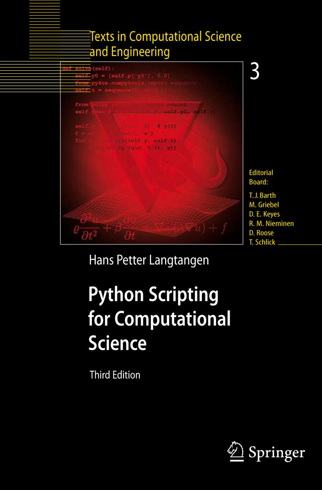
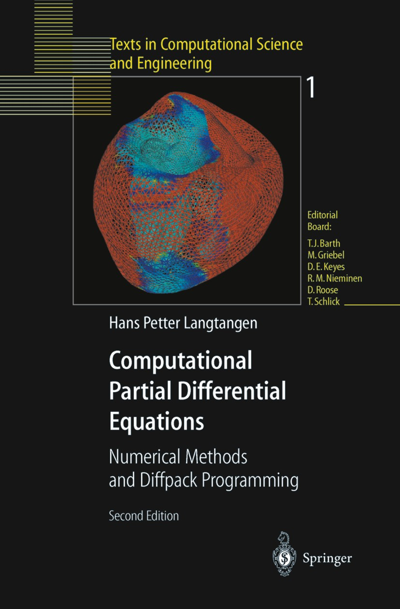

Books
Co-edited/co-authored books
|  |  |  |
A Primer on Scientific Programming with Python
 The text gives a comprehensive introduction to programming in general,
using the Python language. A particular focus in the examples and
exercises is to solve mathematical problems from physics, biology, and
finance by programming.
Amazon reviews: 1st edition,
2nd edition,
3rd edition,
4th edition.
The text gives a comprehensive introduction to programming in general,
using the Python language. A particular focus in the examples and
exercises is to solve mathematical problems from physics, biology, and
finance by programming.
Amazon reviews: 1st edition,
2nd edition,
3rd edition,
4th edition.
Python Scripting for Computational Science
 This book mainly focuses on making Python scripts to administer scientific investigations based on computer simulations, but the book also contains technologies to implement scientific computing codes in Python. Some parts are somewhat outdated now, so there will be no new editions. Amazon reviews: 3rd edition.
Many ask me the question: What are the differences between the Python Scripting book and the newer Primer?
Computational PDEs - Numerical Methods and Diffpack Programming
 The book goes through basic finite difference methods and finite element methods with many applications to fluid and solid mechanics. The theory is tightly integrated with implementations in the C++ package Diffpack, which I worked much on in the 1990s. Amazon reviews: 2nd edition.
Upcoming manuscripts
Numerical Solution of Partial Differential Equations (finite difference and finite element methods)